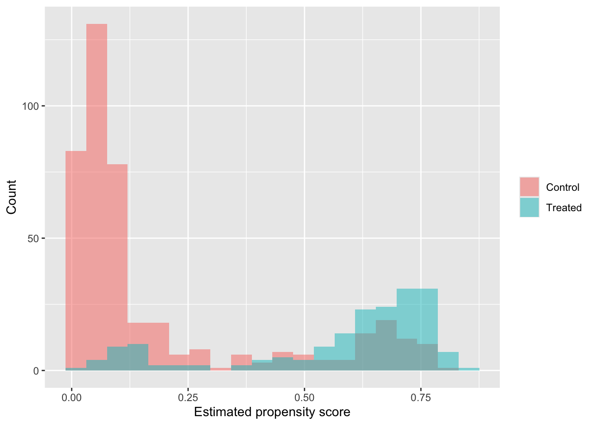
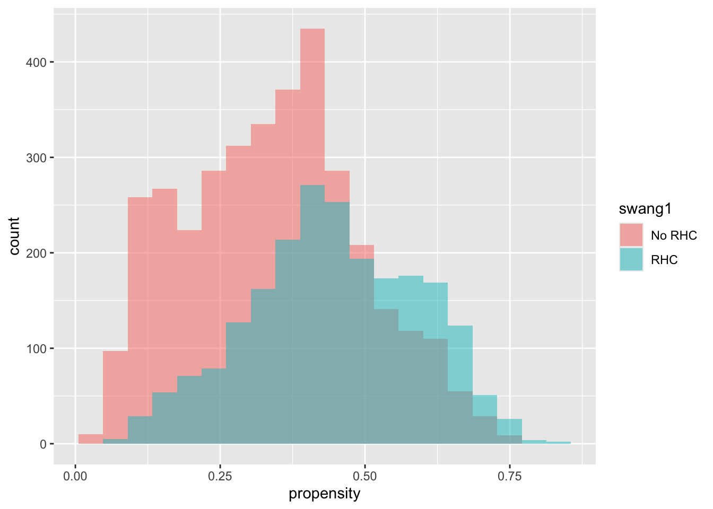

Chapter 12 The retrofit study
The retrofit study is a hypothetical observational study of a city-run home weatherization program. The city offers subsidies for attic and wall insulation, air sealing, duct repair, and minor furnace improvements to households with high energy burdens. Some households apply directly, while others are identified through neighborhood outreach or energy audits. Some households receive the retrofit before the winter heating season, and some do not. There is no random assignment. Participation depends on a mixture of household choice, city targeting, contractor availability, and administrative prioritization.
The treatment variable is retrofit, equal to 1 if the household received the weatherization package before winter 2024–25 and 0 otherwise. The outcome is gas_use_2025, the household’s total natural-gas use during winter 2024–25. Lower values are better. Because treatment is not randomized, treated and untreated households are likely to differ in many ways before treatment begins. Some live in older homes, some have larger families, some have higher energy burdens, and some have homes that are much less energy efficient than others. Those pre-treatment differences are exactly what make causal adjustment necessary.
It is useful to imagine what ?retrofit might look like in R.
retrofit {causalexamples} R Documentation
Home Weatherization Program Study
Description
Observational study of a city-run home weatherization program. The dataset follows
5,000 owner-occupied households over two winters. Treated households received a
subsidized weatherization package before winter 2024--25. The main outcome is
natural-gas use during winter 2024--25. The data were assembled from utility bills,
program records, property records, and a follow-up survey.
Usage
retrofit
Format
A data frame with 5000 rows and 27 variables:
retrofit
Treatment indicator equal to 1 if the household received the retrofit package
before winter 2024--25 and 0 otherwise.
gas_use_2025
Outcome: total natural-gas use during winter 2024--25, measured in therms.
gas_use_2024
Baseline variable measured before treatment: total natural-gas use during
winter 2023--24, measured in therms.
electric_use_2024
Baseline variable measured before treatment: total electricity use during
calendar year 2024 before retrofit work began, measured in kWh.
sqft
Baseline variable measured before treatment: interior square footage of the
home from property records.
home_age
Baseline variable measured before treatment: age of the home in years at the
start of winter 2024--25.
building_type
Baseline variable measured before treatment: detached, duplex, rowhouse, or
small multifamily.
insulation_baseline
Baseline variable measured before treatment: insulation score from the
pre-treatment energy audit.
furnace_age
Baseline variable measured before treatment: age of the primary heating system
in years at intake.
income
Baseline variable measured before treatment: household income in thousands of
dollars, recorded at intake.
arrears_balance
Baseline variable measured before treatment: amount owed on utility bills at
intake or referral.
credit_score
Baseline variable measured before treatment: household credit-score category
at intake, before any retrofit work begins.
owner_occupied
Baseline variable measured before treatment: indicator for owner occupancy at
intake.
years_in_home
Baseline variable measured before treatment: number of years the household had
lived in the home at intake.
occupants
Baseline variable measured before treatment: number of people living in the
home at intake.
children
Baseline variable measured before treatment: number of children in the
household at intake.
elderly_resident
Baseline variable measured before treatment: indicator for whether at least
one resident was age 65 or older at intake.
work_from_home_days
Baseline variable measured before treatment: average number of days per week
at least one adult worked from home at intake.
energy_audit_score
Baseline variable measured before treatment: audit score summarizing energy
inefficiency before treatment.
energy_burden
Baseline variable measured before treatment: share of household income spent
on home energy before treatment.
neighborhood
Baseline variable measured before treatment: neighborhood identifier from the
city's administrative records.
application_month
Baseline variable measured before treatment: month in 2024 when the household
applied or was referred to the program.
insulation_added
Post-treatment variable: amount of new insulation installed after treatment
assignment as part of the retrofit intervention.
contractor_visits
Post-treatment variable: number of contractor visits after treatment began.
coaching_sessions
Post-treatment variable: number of energy coaching sessions completed after
treatment began.
thermostat_setting_2025
Post-treatment variable: average winter thermostat setting during 2024--25.
inspection_passed
Post-treatment variable: indicator for whether the household passed the
post-installation inspection.
followup_survey_response
Post-treatment variable: indicator for whether the household completed the
spring 2025 follow-up survey.12.0.1 Worksheet
After you read the vocabulary and the retrofit description, switch to the worksheet. The goal is not to produce the one perfect answer. The goal is to practice naming the roles variables can play in an observational causal study and to justify those choices in words.
Consult the reference handout while you work. First answer the questions on your own. Then compare answers with a partner or small group.
12.0.1.2 Part B: Variable classification
Fill in each line with several variable names (unless otherwise instructed) from the retrofit study.
Strong pre-treatment confounders:
Other useful pre-treatment covariates:
One post-treatment mediator (best choice):
One possible collider (best choice):
Other bad controls (not including your mediator or collider choice):
Variables or combinations of variables that raise an overlap concern:
Variables that raise a consistency concern:
12.0.2 Solutions
This key is not completely unique. Several answers are defensible if the explanation is good. The main goal is that students classify variables according to their causal role and justify the harder cases clearly.
12.0.2.2 Part B: Variable classification
Strong pre-treatment confounders:
gas_use_2024,sqft,home_age,insulation_baseline,furnace_age,income,arrears_balance,energy_burden,energy_audit_score,neighborhoodOther useful pre-treatment covariates:
electric_use_2024,building_type,owner_occupied,years_in_home,occupants,children,elderly_resident,work_from_home_days,credit_score,application_monthOne post-treatment mediator (best choice):
thermostat_setting_2025One possible collider (best choice):
followup_survey_responseOther bad controls (not including your mediator or collider choice):
coaching_sessions,contractor_visits
A reasonable additional answer isinspection_passedif students explain that conditioning on it may induce selection bias or open a noncausal path. I would usually not countinsulation_addedhere if the goal is to keep the roles clean, since it is more useful for the consistency discussion.Variables or combinations of variables that raise an overlap concern:
Extreme combinations are the main idea here. Good answers include things like:- very high
incometogether with lowenergy_burden - very new homes with strong
insulation_baseline - very old homes with high
gas_use_2024, poorinsulation_baseline, and highenergy_burden - combinations of
neighborhood,income, andhome_age
The point is that some treated and untreated households may be scarce in these parts of the covariate space.
- very high
Variables that raise a consistency concern:
insulation_addedis the best single answer. Stronger answers may note thatinsulation_addedtogether withcontractor_visitsorcoaching_sessionssuggests thatretrofit = 1may bundle together substantially different interventions.
12.0.2.3 Part C: One step back
A good answer would say something like this:
Unmeasured confounding means that there may still be variables affecting both treatment assignment and the outcome that are not included in the data, so adjustment may fail to make treated and control units truly comparable. Limited overlap is different: it means that even after choosing the covariates, there may be parts of the covariate space where treated and control units are too different to compare directly. Adjustment is meant to reduce confounding by observed variables, but it cannot repair a lack of overlap, which is a limitation of the data themselves.
12.1 Collid3rs
A variable can be a collider without automatically being a bad control for the causal effect of interest. A collider is simply a variable with two arrows pointing into it on some path. For example, if both home_age and furnace_age affect energy_burden, then energy_burden is a collider relative to those two variables. That fact alone does not imply that controlling for energy_burden will bias the estimated effect of retrofit on gas_use_2025.
What matters for causal inference is whether conditioning on the collider opens a noncausal path between treatment and outcome. This is the key distinction. A variable may be locally a collider, yet still be harmless for the treatment effect if conditioning on it does not create a new path from retrofit to gas_use_2025. In that case the variable might still cause ordinary modeling problems such as redundancy, multicollinearity, or interpretability issues, but not collider bias in the treatment effect.
A collider is not automatically a bad control. It becomes a bad control when conditioning on it opens a spurious path from treatment to outcome.
A good way to separate the ideas is to compare two cases.
In a relatively harmless case, suppose
\[ \text{home\_age} \rightarrow \text{energy\_burden} \leftarrow \text{furnace\_age}. \]
Here energy_burden is indeed a collider of home_age and furnace_age. But unless conditioning on energy_burden opens some new route from retrofit to gas_use_2025, this local collider structure does not itself create causal bias in the treatment effect. The issue is mostly statistical rather than causal.
In a harmful case, suppose a pre-treatment variable such as finalist_pool behaves like this:
\[ \text{retrofit} \leftarrow U_1 \rightarrow \text{finalist\_pool} \leftarrow U_2 \rightarrow \text{gas\_use\_2025}, \]
where U_1 is an unmeasured factor such as household persistence in the application process, and U_2 is an unmeasured factor such as hidden housing damage. If we condition on finalist_pool, then treatment can become associated with hidden housing damage through the opened path. Since hidden housing damage affects later gas use, the estimated treatment effect becomes biased. This is the classic collider problem.
One important intuition is that before conditioning on the collider, U_2 is not associated with treatment along that path because the path is blocked. After conditioning on the collider, U_2 may become associated with treatment. That is why conditioning on a collider can create a confounding-like problem that was not there before.
12.2 Post-treatment variables do not always fit neatly into one box
Some bad controls do not fit neatly into the simple mediator-versus-collider classification. A good example is sqft measured after treatment. Baseline square footage is a sensible pre-treatment covariate. But if post-treatment sqft reflects later additions to the home, then it is no longer just a baseline housing characteristic. Instead, it may reflect changes that happened after treatment or later household decisions influenced by treatment.
That means post-treatment sqft is usually best described as a messy post-treatment bad control. It is not the cleanest flagship example of a mediator, and it is not naturally a collider either. The main problem is simply that it is measured after treatment and may itself reflect downstream changes. A useful sentence is: not every bad control falls neatly into the mediator/collider taxonomy; some are problematic simply because they reflect post-treatment developments.
12.3 Variables measured after treatment are not automatically bad controls
The crucial issue is not just whether a variable is measured after treatment in calendar time. The real question is whether the variable is downstream of the treatment variable in the causal question of interest. This is why heating_degree_days is different from post-treatment square footage.
If heating_degree_days measures how cold the winter was, then it is not caused by the retrofit. Even if it is recorded during the same winter as the outcome, it is not downstream of treatment. For that reason, it is not a bad control in the same way a post-treatment mediator would be. It may still or may not be useful, depending on whether households face different weather conditions, but it is not problematic merely because of timing.
So the better rule is this: be very careful with variables measured after treatment, but the real danger comes from variables that are affected by treatment or otherwise lie on the treatment pathway.
12.4 Why insulation_added and thermostat_setting_2025 play different roles
The variable insulation_added is best used in the retrofit example to illustrate a consistency concern. If treated households receive very different amounts of insulation or very different bundles of work, then the label retrofit may hide important versions of treatment. In that case the treated potential outcome is less clearly defined, and consistency becomes less plausible unless treatment is described more precisely.
The variable thermostat_setting_2025 is a cleaner example of a mediator. If the retrofit makes the home easier or cheaper to heat, households may change how warm they keep the house, and that changed thermostat behavior may affect gas_use_2025. Then
\[ \text{retrofit} \rightarrow \text{thermostat\_setting\_2025} \rightarrow \text{gas\_use\_2025} \]
is a plausible part of the causal story. If the goal is to estimate the total effect of retrofit on gas use, then controlling for thermostat_setting_2025 would be a mistake because it would block part of the treatment effect.
12.5 Why finalist_pool or special_review can be problematic in more than one way
Variables such as finalist_pool or special_review are not only potential colliders. They can also cause trouble because they often function as selection variables. If the analysis is restricted to households in the finalist pool, then the study is no longer describing the original applicant population. Even apart from collider bias, this restriction changes the population being studied.
These variables may also be poor modeling choices because they are often opaque composite variables. A status such as finalist_pool may bundle together income, energy burden, application quality, housing problems, and city rules into one summary indicator. Even if it were not creating collider bias, it could still be unhelpful because it hides the underlying sources of variation rather than representing a clean pre-treatment characteristic.
So there are three distinct concerns worth separating:
- Collider problem: conditioning on the variable may open a false treatment–outcome path.
- Selection problem: restricting the sample using the variable may change the target population.
- Modeling problem: the variable may bundle together several processes and be hard to interpret causally.
12.6 A compact summary
The retrofit discussion suggests four practical lessons.
- A variable can be a collider somewhere in the graph without being a bad control for the treatment effect.
- A collider becomes a causal problem when conditioning on it opens a noncausal path from treatment to outcome.
- Not every bad control is a clean mediator or collider; some post-treatment variables are simply messy because they reflect downstream changes.
- Variables such as
finalist_poolcan be problematic for more than one reason: collider bias, selection bias, and opacity in the adjustment set.
These distinctions are worth making slowly, because people often hear “collider” or “post-treatment variable” as if those labels automatically settle the matter. The more careful rule is always the same: ask whether conditioning on the variable helps or harms the treatment–outcome comparison that the causal question actually requires.
12.7 Directed Acyclic Graphs (DAGs)
DAGs can be used to help understand the relationship between variables in a causal analysis. In its simplest form, we put an arrow bewteen two variables if there is or could be (we believe) a causal effect between the two variables. As a basic example, if \(D\) is the 0/1 treatment variable and \(R\) is the response variable, then we would normally put an arrow between \(D\) and \(R\). In the context of the lalonde data, we believe that there is or could be a causal effect between treat and re78, so we would write
\[ \text{treat} \to \text{re78} \]
We also believe that re75 has a causal effect on re78, so we would write
\[ \text{re75}\to \text{re78} \]
At this point, re75 is not yet identified as a confounder, merely a variable that could have a causal effect on re78. However, we also believe that income in 1975 could have a causal effect on whether a candidate participates in the job training program, so we would have:
\[
\text{treat} \leftarrow \text{re75}\rightarrow \text{re78}
\]
This is the classic DAG for a confounder. It is a variable that has a causal effect on both treatment and the response variable. This creates a backdoor path so that if we do not adjust for income in 1975, then we could have non-causal correlation between treatment and income in 1978. In other words, re75 is a good control because it helps block a noncausal association between treat and re78.
Now let’s look at mediators. Suppose we also had the variable jobsearcheffort. This would be a mediator. The reason is that we can imagine that the training could have a causal effect on the job search effort. Job search effort also has a causal effect on income. So we get the DAG
\[ \text{treat} \rightarrow \text{jobsearch} \rightarrow \text{re78} \]
This is the traditional mediator DAG. If we control on jobsearch, then part of the effect of treat will be swallowed up by the jobsearch estimate, when in fact the jobsearch usage was caused by the treat. Note that the difference between a confounder and a mediator is whether the variable is caused by the treatment (mediator) or causes the treatment (confounder).
Finally, let’s look at colliders. We claim that followupresponse is a collider. The causal story is that the training can affect whether someone completes the follow-up, and organizational skill (which is unmeasured) can also affect whether someone follows up. Organizational skill may also affect later income. This gives the DAG
\[ \text{treat} \rightarrow \text{followupresponse} \leftarrow \text{organization} \rightarrow \text{re78}. \]
By itself, this path isn’t a problem. But if we condition on followupresponse for example, by controlling for it in a regression or by restricting attention to those who respond, we open a noncausal path between treatment and income. Treatment does not affect real income along this path, but conditioning on the collider can still induce a correlation between treatment and income.
Although many colliders which are bad controls are downstream of treatment, that is not always the case. Here is a slightly more complicated collider example in which the collider is not downstream of treatment. Suppose retrofit is our treatment and gas\_use\_2025 is the outcome. Now imagine two unmeasured variables. The first is household persistence: some households are better at completing paperwork, meeting deadlines, and following through with the application process. That can increase the chance that they ultimately receive the retrofit. The second is hidden housing damage: some homes have serious but partly unrecorded problems, such as leaky ducts or damaged window seals, and those problems can increase later gas use. Suppose also that a household enters the city’s finalist\_pool either because it has a very persistent application or because the home appears complicated enough to merit special attention. Then we have the DAG
\[ \text{retrofit} \leftarrow \text{persistence} \rightarrow \text{finalist\_pool} \leftarrow \text{hidden damage} \rightarrow \text{gas\_use\_2025}. \]
The key point is that finalist_pool is a collider, but it is not downstream of treatment. By itself, this path is not a problem. However, if we condition on finalist_pool, for example, by controlling for it in a regression or by restricting the analysis only to households in the finalist pool, we open a noncausal path between treatment and outcome. Intuitively, once we hold finalist status fixed, treatment begins to carry information about hidden housing damage through the induced association created at the collider. That means finalist_pool is a bad control even though it is not caused by treatment.
We contrast that with the following collider which is not a bad control. This is different from the earlier energy_burden example. There, the idea was that energy_burden might be a collider relative to two other baseline housing variables, such as home_age and furnace_age, if both of those affect energy burden. But that fact alone does not make energy_burden a bad control for estimating the effect of retrofit on gas_use_2025. The reason is that conditioning on energy_burden does not necessarily open any important new noncausal path from treatment to outcome. In that case, the main concerns are more ordinary modeling issues, such as redundancy with other baseline controls or difficulty interpreting coefficients, rather than collider bias in the treatment effect. However, if you could come up with a different story about how energy_burden collides with variables to create a noncausal path between treatment and response, then it could be a bad control.
12.9 Propensity scores and matching in the Lalonde data
We now use propensity scores and nearest-neighbor matching to estimate the effect of participation in the training program on re78, real earnings in 1978. The goal is to compare treated and untreated individuals who look similar on the observed pre-treatment covariates. This is useful because the training and control groups differ in important baseline ways, so a raw comparison of 1978 earnings is not automatically credible as a causal estimate.
The basic idea is simple. First, we estimate each individual’s propensity score, which is the probability of treatment given the observed baseline covariates. Then we use those scores to match treated and control individuals with similar covariate profiles. This does not solve the problem of unmeasured confounding, but it can improve comparability on the observed covariates and reduce reliance on extrapolation.
library(tidyverse)
library(MatchIt)
library(broom)
aa <- MatchIt::lalonde |>
as_tibble() |>
mutate(
treat = factor(treat, levels = c(0, 1), labels = c("Control", "Treated")),
race = factor(race),
married = factor(married, levels = c(0, 1), labels = c("No", "Yes")),
nodegree = factor(nodegree, levels = c(0, 1), labels = c("No", "Yes"))
)We begin by estimating propensity scores using a logistic regression for treatment assignment. The covariates here are all measured before treatment and are plausible common causes of treatment and later earnings.
ps_mod <- glm(
treat ~ age + educ + race + married + nodegree + re74 + re75,
data = aa,
family = binomial()
)
aa_ps <- ps_mod |>
augment(data = aa, type.predict = "response") |>
mutate(ps = .fitted) |>
select(-.fitted)We can now inspect the estimated propensity scores. The main issue is overlap. Where the treated and control groups overlap, there are plausible treated-versus-control comparisons. Where they do not overlap, the analysis becomes more dependent on extrapolation.
aa_ps |>
ggplot(aes(x = ps, fill = treat)) +
geom_histogram(position = "identity", alpha = 0.5, bins = 20) +
labs(
x = "Estimated propensity score",
y = "Count",
fill = NULL
)
If the treated group tends to have much higher propensity scores than the control group, that tells us treatment assignment is strongly related to the observed baseline covariates. That is exactly why a naive comparison can be misleading. At the same time, if there is at least some substantial overlap, then matching may allow us to compare treated and control individuals who were similarly likely to receive treatment.
Next, we use nearest-neighbor matching based on the estimated propensity scores. The basic algorithm for this is that we pick a treated unit and find the control that has the nearest propensity score. We then remove the treated and control unit from the data and put them into a new data set. We go to the next treated unit and repeat until either there are no more controls or no more treated units.
m_out <- matchit(
treat ~ age + educ + race + married + nodegree + re74 + re75,
data = aa,
method = "nearest",
distance = "glm"
)
summary(m_out)##
## Call:
## matchit(formula = treat ~ age + educ + race + married + nodegree +
## re74 + re75, data = aa, method = "nearest", distance = "glm")
##
## Summary of Balance for All Data:
## Means Treated Means Control Std. Mean Diff. Var. Ratio eCDF Mean
## distance 0.5774 0.1822 1.7941 0.9211 0.3774
## age 25.8162 28.0303 -0.3094 0.4400 0.0813
## educ 10.3459 10.2354 0.0550 0.4959 0.0347
## raceblack 0.8432 0.2028 1.7615 . 0.6404
## racehispan 0.0595 0.1422 -0.3498 . 0.0827
## racewhite 0.0973 0.6550 -1.8819 . 0.5577
## marriedNo 0.8108 0.4872 0.8263 . 0.3236
## marriedYes 0.1892 0.5128 -0.8263 . 0.3236
## nodegreeNo 0.2919 0.4033 -0.2450 . 0.1114
## nodegreeYes 0.7081 0.5967 0.2450 . 0.1114
## re74 2095.5737 5619.2365 -0.7211 0.5181 0.2248
## re75 1532.0553 2466.4844 -0.2903 0.9563 0.1342
## eCDF Max
## distance 0.6444
## age 0.1577
## educ 0.1114
## raceblack 0.6404
## racehispan 0.0827
## racewhite 0.5577
## marriedNo 0.3236
## marriedYes 0.3236
## nodegreeNo 0.1114
## nodegreeYes 0.1114
## re74 0.4470
## re75 0.2876
##
## Summary of Balance for Matched Data:
## Means Treated Means Control Std. Mean Diff. Var. Ratio eCDF Mean
## distance 0.5774 0.3629 0.9739 0.7566 0.1321
## age 25.8162 25.3027 0.0718 0.4568 0.0847
## educ 10.3459 10.6054 -0.1290 0.5721 0.0239
## raceblack 0.8432 0.4703 1.0259 . 0.3730
## racehispan 0.0595 0.2162 -0.6629 . 0.1568
## racewhite 0.0973 0.3135 -0.7296 . 0.2162
## marriedNo 0.8108 0.7892 0.0552 . 0.0216
## marriedYes 0.1892 0.2108 -0.0552 . 0.0216
## nodegreeNo 0.2919 0.3622 -0.1546 . 0.0703
## nodegreeYes 0.7081 0.6378 0.1546 . 0.0703
## re74 2095.5737 2342.1076 -0.0505 1.3289 0.0469
## re75 1532.0553 1614.7451 -0.0257 1.4956 0.0452
## eCDF Max Std. Pair Dist.
## distance 0.4216 0.9740
## age 0.2541 1.3938
## educ 0.0757 1.2474
## raceblack 0.3730 1.0259
## racehispan 0.1568 1.0743
## racewhite 0.2162 0.8390
## marriedNo 0.0216 0.8281
## marriedYes 0.0216 0.8281
## nodegreeNo 0.0703 1.0106
## nodegreeYes 0.0703 1.0106
## re74 0.2757 0.7965
## re75 0.2054 0.7381
##
## Sample Sizes:
## Control Treated
## All 429 185
## Matched 185 185
## Unmatched 244 0
## Discarded 0 0The matching summary is useful because it reports balance before and after matching. The main question is whether the treated and control groups become more similar on the observed covariates after matching. In a good matching analysis, we care more about improved balance than about how well the treatment model predicts treatment. Here, we can see that several variables are not well balanced even after matching. We focus only on the first three colums and we see that while the mean of age (for example) is well balanced with 25.8 for treatment and 25.3 for control, the racial balance is poor with 84% of the treated population is black while only 47% of the matched control population is black. For each variable, we want the standardized mean difference to be less than, say 0.2, in absolute value to be well-balanced. Here, we see that the race variables are not well matched, nor is distance, which is the raw propensity score.
Despite these warning signs, we now extract the matched data and estimate the treatment effect in the matched sample.
aa_match <- match.data(m_out)
mod_match <- lm(re78 ~ treat, data = aa_match, weights = weights) #not recommended
tidy(mod_match, conf.int = TRUE)## # A tibble: 2 × 7
## term estimate std.error statistic p.value conf.low conf.high
## <chr> <dbl> <dbl> <dbl> <dbl> <dbl> <dbl>
## 1 (Intercept) 5455. 516. 10.6 5.88e-23 4439. 6470.
## 2 treatTreated 894. 730. 1.22 2.21e- 1 -542. 2330.This matched regression is much simpler than the earlier adjusted regression because the covariate adjustment has largely been moved into the design stage. After matching, we estimate the effect of treatment by comparing outcomes in the matched sample, where treated and control individuals are intended to be more comparable on the observed baseline covariates. Note that the matched data is now paired, which introduces some dependence structure on the data and puts the usage of lm on the paired observations into question. We would want to analyze the matched data set taking into account the paired nature of the data. You already know one way of doing that - paired \(t\)-tests. These are not central to modern causal inference, but for the sake of time, we use them here.
aa_wide <- aa_match |>
select(treat, re78, subclass) |>
pivot_wider(names_from = treat, values_from = re78)
aa_wide |>
summarize(mu_treated = mean(Treated),
mu_control = mean(Control))## # A tibble: 1 × 2
## mu_treated mu_control
## <dbl> <dbl>
## 1 6349. 5455.##
## Paired t-test
##
## data: aa_wide$Treated and aa_wide$Control
## t = 1.2699, df = 184, p-value = 0.2057
## alternative hypothesis: true mean difference is not equal to 0
## 95 percent confidence interval:
## -495.1223 2283.8573
## sample estimates:
## mean difference
## 894.3675We see that we have an estimate of 894 dollars higher salary based on the paired data, with a confidence interval of \([-495, 2284]\). This is not statistically significant (\(p = .2057\)).
Note that our matching was not very good - in particular the racial profile of the treated and untreated groups are different. We can try to fix that by forcing an exact match on race, rather than allowing a dubious close enough match to someone of a different race. However, doint so causes other variables to become poorly balanced.
m_out2 <- matchit(treat ~ age + educ + race + married + nodegree + re74 + re75, data = aa, method = "nearest", distance = "glm", exact = ~race)
summary(m_out2)##
## Call:
## matchit(formula = treat ~ age + educ + race + married + nodegree +
## re74 + re75, data = aa, method = "nearest", distance = "glm",
## exact = ~race)
##
## Summary of Balance for All Data:
## Means Treated Means Control Std. Mean Diff. Var. Ratio eCDF Mean
## distance 0.5774 0.1822 1.7941 0.9211 0.3774
## age 25.8162 28.0303 -0.3094 0.4400 0.0813
## educ 10.3459 10.2354 0.0550 0.4959 0.0347
## raceblack 0.8432 0.2028 1.7615 . 0.6404
## racehispan 0.0595 0.1422 -0.3498 . 0.0827
## racewhite 0.0973 0.6550 -1.8819 . 0.5577
## marriedNo 0.8108 0.4872 0.8263 . 0.3236
## marriedYes 0.1892 0.5128 -0.8263 . 0.3236
## nodegreeNo 0.2919 0.4033 -0.2450 . 0.1114
## nodegreeYes 0.7081 0.5967 0.2450 . 0.1114
## re74 2095.5737 5619.2365 -0.7211 0.5181 0.2248
## re75 1532.0553 2466.4844 -0.2903 0.9563 0.1342
## eCDF Max
## distance 0.6444
## age 0.1577
## educ 0.1114
## raceblack 0.6404
## racehispan 0.0827
## racewhite 0.5577
## marriedNo 0.3236
## marriedYes 0.3236
## nodegreeNo 0.1114
## nodegreeYes 0.1114
## re74 0.4470
## re75 0.2876
##
## Summary of Balance for Matched Data:
## Means Treated Means Control Std. Mean Diff. Var. Ratio eCDF Mean
## distance 0.5851 0.4899 0.4319 1.2527 0.0902
## age 25.5517 26.4397 -0.1241 0.4439 0.0804
## educ 10.4914 10.3879 0.0515 0.3517 0.0417
## raceblack 0.7500 0.7500 0.0000 . 0.0000
## racehispan 0.0948 0.0948 0.0000 . 0.0000
## racewhite 0.1552 0.1552 0.0000 . 0.0000
## marriedNo 0.9397 0.7241 0.5503 . 0.2155
## marriedYes 0.0603 0.2759 -0.5503 . 0.2155
## nodegreeNo 0.2155 0.3879 -0.3792 . 0.1724
## nodegreeYes 0.7845 0.6121 0.3792 . 0.1724
## re74 887.7150 3090.7096 -0.4508 0.2353 0.1553
## re75 1293.6827 1924.4269 -0.1959 1.0263 0.0941
## eCDF Max Std. Pair Dist.
## distance 0.4224 0.4338
## age 0.1724 1.4085
## educ 0.1724 1.1405
## raceblack 0.0000 0.0000
## racehispan 0.0000 0.0000
## racewhite 0.0000 0.0000
## marriedNo 0.2155 0.5943
## marriedYes 0.2155 0.5943
## nodegreeNo 0.1724 0.8722
## nodegreeYes 0.1724 0.8722
## re74 0.3879 0.7036
## re75 0.2155 0.7532
##
## Sample Sizes:
## Control Treated
## All 429 185
## Matched 116 116
## Unmatched 313 69
## Discarded 0 0This matching is arguably better (based on the distance score), but still does not pass the rule of thumb that standardized differences should be between -0.2 and 0.2. Realistically, it doesn’t make a lot of sense to keep trying to get a good match here, when we already know of unmeasured confounders (sex for example). As an exercise, compute the estimated effect of treatment among the treated based on this new matching, and see whether it is significant.
12.10 Bernoulli outcomes
In this section, we consider Bernoulli outcomes. We will use the data set rhc in the causaldef package. Let’s start by examining it.
The help page doesn’t provide a whole lot of information about the variables. Note that for causal inference, understanding exactly what the variables are measuring (and when) is essential. We cannot proceed without a better understanding of the variables. I downloaded the original paper and asked ChatGPT to provide more information on the variables based on the descriptions in the paper. Here is what it gave:
12.10.1 rhc
A dataset containing 5,735 critically ill adult patients from the SUPPORT study. The treatment variable is swang1, indicating whether the patient received right heart catheterization (RHC, Swan-Ganz catheterization) within the first 24 hours of ICU care. Common outcome variables include dth30 (30-day mortality), death (longer-term mortality indicator), and t3d30 (survival time up to 30 days).
12.10.1.2 Variables
X: row index carried over from the imported data set.cat1: primary disease category used by the study.cat2: secondary disease category, when applicable.ca: cancer status, typically coded as no cancer, localized cancer, or metastatic cancer.sadmdte: study admission date, stored as an integer date code.dschdte: hospital discharge date, stored as an integer date code.dthdte: date of death, stored as an integer date code.lstctdte: date of last contact, stored as an integer date code.death: indicator for death by the longer-term follow-up window.cardiohx: indicator for prior cardiovascular disease history.chfhx: indicator for prior congestive heart failure history.dementhx: indicator for prior dementia or related neurologic functional impairment.psychhx: indicator for prior psychiatric history.chrpulhx: indicator for prior chronic pulmonary disease history.renalhx: indicator for prior chronic renal disease history.liverhx: indicator for prior liver disease history.gibledhx: indicator for prior gastrointestinal bleeding history.malighx: indicator for prior malignancy history.immunhx: indicator for prior immunocompromised status.transhx: indicator for prior transfer from another hospital or prior major transfer history.amihx: indicator for prior acute myocardial infarction history.age: age in years.sex: sex.edu: years of education.surv2md1: model-based estimate of the probability of surviving 2 months, computed at day 1.das2d3pc: Duke Activity Status Index or a closely related baseline functional-status measure.t3d30: survival time up to 30 days.dth30: indicator for death within 30 days.aps1: APACHE III severity score on day 1.scoma1: Glasgow Coma Score on day 1.meanbp1: mean blood pressure on day 1.wblc1: white blood cell count on day 1.hrt1: heart rate on day 1.resp1: respiratory rate on day 1.temp1: body temperature on day 1.pafi1: ratio of arterial oxygen pressure to fraction of inspired oxygen (PaO2/FiO2) on day 1.alb1: albumin on day 1.hema1: hematocrit on day 1.bili1: bilirubin on day 1.crea1: creatinine on day 1.sod1: sodium on day 1.pot1: potassium on day 1.paco21: arterial PaCO2 on day 1.ph1: arterial pH on day 1.swang1: treatment indicator for receipt of right heart catheterization within the first 24 hours.wtkilo1: weight in kilograms on day 1.dnr1: do-not-resuscitate status on day 1.ninsclas: insurance class.resp: indicator for a respiratory admission diagnosis.card: indicator for a cardiovascular admission diagnosis.neuro: indicator for a neurologic admission diagnosis.gastr: indicator for a gastrointestinal admission diagnosis.renal: indicator for a renal admission diagnosis.meta: indicator for a metabolic admission diagnosis.hema: indicator for a hematologic admission diagnosis.seps: indicator for sepsis.trauma: indicator for trauma.ortho: indicator for an orthopedic diagnosis.adld3p: activities-of-daily-living measure recorded later in the study period, typically around day 3.urin1: urine output on day 1.race: race category.income: income category.ptid: patient identifier.
12.10.1.3 Details
For causal inference, it is useful to think of these variables in broad groups. The treatment is swang1. The most common binary outcome is dth30, though death and t3d30 are also used. Variables such as age, sex, race, income, cat1, cat2, and the *hx variables are the clearest baseline covariates. The day-1 physiology variables, such as aps1, meanbp1, hrt1, resp1, and the laboratory measures, are clinically important but raise timing questions because treatment also occurs within the first 24 hours. Variables such as dth30, death, t3d30, and adld3p should be treated as outcomes or downstream variables rather than ordinary baseline controls.
12.10.1.4 Source
SUPPORT (Study to Understand Prognoses and Preferences for Outcomes and Risks of Treatments), as used in observational analyses of right heart catheterization in critically ill ICU patients.
OK, let’s modify the data a little bit to make sure things are working correctly, then we’ll start with propensity scores.
aa <- aa |>
as_tibble() |>
mutate(
across(
c(cardiohx, chfhx, dementhx, psychhx, chrpulhx, renalhx,
liverhx, gibledhx, malighx, immunhx, transhx, amihx),
~ factor(.x, levels = c(0, 1), labels = c("No", "Yes"))
)
)We now perform a logistic regression and estimate the overlap. We choose controls of the following type:
- General demographics:
age,sex,race,edu,income, andninsclas - General health history before treatment:
cat1,ca,cardiohx,chfhx,dementhx,psychhx,chrpulhx,renalhx,liverhx,gibledhx,malighx,immunhx,transhx,amihx - Day of treatment health indicator that cannot reasonably be influenced by choice of treatment:
dnr1
It would be helpful if we knew which of the day of treatment variables were before the treatment and which were after the treatment, but absent that information we leave out these potential bad controls. We do not include cat2 because it contains many missing values. If we knew that these were missing becuase that meant there isn’t a second disease category, then we could replace it with “None” and add it.
mod <- glm(swang1 ~ age + sex + race + edu + income + ninsclas + cat1 + ca +
cardiohx + chfhx + dementhx + psychhx + chrpulhx + renalhx +
liverhx + gibledhx + malighx + immunhx + transhx + amihx + dnr1, data = aa, family = binomial)
summary(mod)##
## Call:
## glm(formula = swang1 ~ age + sex + race + edu + income + ninsclas +
## cat1 + ca + cardiohx + chfhx + dementhx + psychhx + chrpulhx +
## renalhx + liverhx + gibledhx + malighx + immunhx + transhx +
## amihx + dnr1, family = binomial, data = aa)
##
## Coefficients:
## Estimate Std. Error z value Pr(>|z|)
## (Intercept) -1.731890 0.471998 -3.669 0.000243 ***
## age 0.002777 0.002380 1.167 0.243387
## sexMale 0.169146 0.059511 2.842 0.004479 **
## raceother 0.040291 0.136778 0.295 0.768320
## racewhite 0.058324 0.083989 0.694 0.487418
## edu 0.019977 0.010588 1.887 0.059207 .
## income$11-$25k -0.051560 0.124638 -0.414 0.679108
## income$25-$50k 0.060185 0.124556 0.483 0.628955
## incomeUnder $11k 0.013798 0.123752 0.111 0.911225
## ninsclasMedicare 0.188941 0.122550 1.542 0.123135
## ninsclasMedicare & Medicaid 0.209621 0.153686 1.364 0.172582
## ninsclasNo insurance 0.413173 0.150452 2.746 0.006029 **
## ninsclasPrivate 0.378736 0.112462 3.368 0.000758 ***
## ninsclasPrivate & Medicare 0.323499 0.126064 2.566 0.010283 *
## cat1CHF 0.103493 0.130686 0.792 0.428406
## cat1Cirrhosis -0.942597 0.218943 -4.305 1.67e-05 ***
## cat1Colon Cancer -0.927949 1.094764 -0.848 0.396647
## cat1Coma -0.665925 0.126532 -5.263 1.42e-07 ***
## cat1COPD -1.285997 0.165518 -7.770 7.88e-15 ***
## cat1Lung Cancer -1.207561 0.502498 -2.403 0.016256 *
## cat1MOSF w/Malignancy 0.363687 0.136515 2.664 0.007720 **
## cat1MOSF w/Sepsis 0.849876 0.073744 11.525 < 2e-16 ***
## caNo 0.435257 0.398095 1.093 0.274240
## caYes -0.050606 0.143720 -0.352 0.724753
## cardiohxYes 0.133110 0.086428 1.540 0.123529
## chfhxYes 0.140010 0.093593 1.496 0.134671
## dementhxYes -0.534149 0.107611 -4.964 6.92e-07 ***
## psychhxYes -0.504803 0.126850 -3.980 6.91e-05 ***
## chrpulhxYes -0.103179 0.090695 -1.138 0.255265
## renalhxYes -0.122353 0.141512 -0.865 0.387252
## liverhxYes 0.233900 0.162963 1.435 0.151203
## gibledhxYes -0.220111 0.213684 -1.030 0.302972
## malighxYes 0.187896 0.357715 0.525 0.599396
## immunhxYes 0.072910 0.066425 1.098 0.272366
## transhxYes 0.451930 0.089002 5.078 3.82e-07 ***
## amihxYes 0.503990 0.155191 3.248 0.001164 **
## dnr1Yes -0.591689 0.104392 -5.668 1.45e-08 ***
## ---
## Signif. codes: 0 '***' 0.001 '**' 0.01 '*' 0.05 '.' 0.1 ' ' 1
##
## (Dispersion parameter for binomial family taken to be 1)
##
## Null deviance: 7621.4 on 5734 degrees of freedom
## Residual deviance: 6974.7 on 5698 degrees of freedom
## AIC: 7048.7
##
## Number of Fisher Scoring iterations: 4broom::augment(mod) |>
mutate(propensity = plogis(.fitted)) |>
ggplot(aes(x = propensity, fill = swang1)) +
geom_histogram(position = "identity", alpha = 0.5, bins = 20) 
Let’s also count the number of treated and untreated.
## No RHC RHC
## 3551 2184Since we considering RHC as the treatment and we will do 1:1 matching of the treated, this looks pretty good. We don’t need there to be many RHC treated people on the lower tail, but we do like to see no RHC people in the upper tail, and we do for the most part.
match_mod <- matchit(swang1 ~ age + sex + race + edu + income + ninsclas + cat1 + ca +
cardiohx + chfhx + dementhx + psychhx + chrpulhx + renalhx +
liverhx + gibledhx + malighx + immunhx + transhx + amihx + dnr1,
data = aa,
method = "nearest",
distance = "glm")
aa_dat <- match.data(match_mod)
summary(match_mod)##
## Call:
## matchit(formula = swang1 ~ age + sex + race + edu + income +
## ninsclas + cat1 + ca + cardiohx + chfhx + dementhx + psychhx +
## chrpulhx + renalhx + liverhx + gibledhx + malighx + immunhx +
## transhx + amihx + dnr1, data = aa, method = "nearest", distance = "glm")
##
## Summary of Balance for All Data:
## Means Treated Means Control Std. Mean Diff.
## distance 0.4466 0.3404 0.7284
## age 60.7498 61.7609 -0.0647
## sexFemale 0.4148 0.4610 -0.0937
## sexMale 0.5852 0.5390 0.0937
## raceblack 0.1534 0.1647 -0.0315
## raceother 0.0650 0.0600 0.0204
## racewhite 0.7816 0.7753 0.0153
## edu 11.8564 11.5690 0.0910
## income> $50k 0.0888 0.0724 0.0578
## income$11-$25k 0.2070 0.2008 0.0152
## income$25-$50k 0.1799 0.1408 0.1019
## incomeUnder $11k 0.5243 0.5860 -0.1237
## ninsclasMedicaid 0.0884 0.1279 -0.1391
## ninsclasMedicare 0.2340 0.2667 -0.0773
## ninsclasMedicare & Medicaid 0.0563 0.0707 -0.0623
## ninsclasNo insurance 0.0623 0.0524 0.0409
## ninsclasPrivate 0.3347 0.2723 0.1322
## ninsclasPrivate & Medicare 0.2244 0.2101 0.0342
## cat1ARF 0.4162 0.4452 -0.0589
## cat1CHF 0.0957 0.0696 0.0889
## cat1Cirrhosis 0.0224 0.0493 -0.1813
## cat1Colon Cancer 0.0005 0.0017 -0.0576
## cat1Coma 0.0435 0.0960 -0.2575
## cat1COPD 0.0266 0.1124 -0.5337
## cat1Lung Cancer 0.0023 0.0096 -0.1524
## cat1MOSF w/Malignancy 0.0723 0.0679 0.0173
## cat1MOSF w/Sepsis 0.3205 0.1484 0.3688
## caMetastatic 0.0563 0.0735 -0.0745
## caNo 0.7908 0.7468 0.1080
## caYes 0.1529 0.1797 -0.0743
## cardiohxNo 0.7958 0.8403 -0.1105
## cardiohxYes 0.2042 0.1597 0.1105
## chfhxNo 0.8054 0.8322 -0.0676
## chfhxYes 0.1946 0.1678 0.0676
## dementhxNo 0.9309 0.8837 0.1859
## dementhxYes 0.0691 0.1163 -0.1859
## psychhxNo 0.9542 0.9195 0.1663
## psychhxYes 0.0458 0.0805 -0.1663
## chrpulhxNo 0.8558 0.7820 0.2099
## chrpulhxYes 0.1442 0.2180 -0.2099
## renalhxNo 0.9515 0.9580 -0.0306
## renalhxYes 0.0485 0.0420 0.0306
## liverhxNo 0.9377 0.9254 0.0511
## liverhxYes 0.0623 0.0746 -0.0511
## gibledhxNo 0.9753 0.9631 0.0783
## gibledhxYes 0.0247 0.0369 -0.0783
## malighxNo 0.7967 0.7544 0.1050
## malighxYes 0.2033 0.2456 -0.1050
## immunhxNo 0.7088 0.7446 -0.0788
## immunhxYes 0.2912 0.2554 0.0788
## transhxNo 0.8503 0.9057 -0.1552
## transhxYes 0.1497 0.0943 0.1552
## amihxNo 0.9565 0.9704 -0.0683
## amihxYes 0.0435 0.0296 0.0683
## dnr1No 0.9290 0.8595 0.2709
## dnr1Yes 0.0710 0.1405 -0.2709
## Var. Ratio eCDF Mean eCDF Max
## distance 0.9173 0.1917 0.2749
## age 0.8175 0.0285 0.0703
## sexFemale . 0.0462 0.0462
## sexMale . 0.0462 0.0462
## raceblack . 0.0114 0.0114
## raceother . 0.0050 0.0050
## racewhite . 0.0063 0.0063
## edu 1.0147 0.0181 0.0511
## income> $50k . 0.0165 0.0165
## income$11-$25k . 0.0062 0.0062
## income$25-$50k . 0.0391 0.0391
## incomeUnder $11k . 0.0618 0.0618
## ninsclasMedicaid . 0.0395 0.0395
## ninsclasMedicare . 0.0327 0.0327
## ninsclasMedicare & Medicaid . 0.0144 0.0144
## ninsclasNo insurance . 0.0099 0.0099
## ninsclasPrivate . 0.0624 0.0624
## ninsclasPrivate & Medicare . 0.0143 0.0143
## cat1ARF . 0.0290 0.0290
## cat1CHF . 0.0261 0.0261
## cat1Cirrhosis . 0.0268 0.0268
## cat1Colon Cancer . 0.0012 0.0012
## cat1Coma . 0.0525 0.0525
## cat1COPD . 0.0858 0.0858
## cat1Lung Cancer . 0.0073 0.0073
## cat1MOSF w/Malignancy . 0.0045 0.0045
## cat1MOSF w/Sepsis . 0.1721 0.1721
## caMetastatic . 0.0172 0.0172
## caNo . 0.0439 0.0439
## caYes . 0.0267 0.0267
## cardiohxNo . 0.0445 0.0445
## cardiohxYes . 0.0445 0.0445
## chfhxNo . 0.0268 0.0268
## chfhxYes . 0.0268 0.0268
## dementhxNo . 0.0472 0.0472
## dementhxYes . 0.0472 0.0472
## psychhxNo . 0.0348 0.0348
## psychhxYes . 0.0348 0.0348
## chrpulhxNo . 0.0737 0.0737
## chrpulhxYes . 0.0737 0.0737
## renalhxNo . 0.0066 0.0066
## renalhxYes . 0.0066 0.0066
## liverhxNo . 0.0124 0.0124
## liverhxYes . 0.0124 0.0124
## gibledhxNo . 0.0122 0.0122
## gibledhxYes . 0.0122 0.0122
## malighxNo . 0.0423 0.0423
## malighxYes . 0.0423 0.0423
## immunhxNo . 0.0358 0.0358
## immunhxYes . 0.0358 0.0358
## transhxNo . 0.0554 0.0554
## transhxYes . 0.0554 0.0554
## amihxNo . 0.0139 0.0139
## amihxYes . 0.0139 0.0139
## dnr1No . 0.0696 0.0696
## dnr1Yes . 0.0696 0.0696
##
## Summary of Balance for Matched Data:
## Means Treated Means Control Std. Mean Diff.
## distance 0.4466 0.4201 0.1817
## age 60.7498 61.0777 -0.0210
## sexFemale 0.4148 0.4295 -0.0297
## sexMale 0.5852 0.5705 0.0297
## raceblack 0.1534 0.1621 -0.0241
## raceother 0.0650 0.0600 0.0204
## racewhite 0.7816 0.7779 0.0089
## edu 11.8564 11.8039 0.0166
## income> $50k 0.0888 0.0824 0.0225
## income$11-$25k 0.2070 0.2111 -0.0102
## income$25-$50k 0.1799 0.1712 0.0226
## incomeUnder $11k 0.5243 0.5353 -0.0220
## ninsclasMedicaid 0.0884 0.0920 -0.0129
## ninsclasMedicare 0.2340 0.2477 -0.0324
## ninsclasMedicare & Medicaid 0.0563 0.0623 -0.0258
## ninsclasNo insurance 0.0623 0.0595 0.0114
## ninsclasPrivate 0.3347 0.3164 0.0388
## ninsclasPrivate & Medicare 0.2244 0.2221 0.0055
## cat1ARF 0.4162 0.4904 -0.1505
## cat1CHF 0.0957 0.0962 -0.0016
## cat1Cirrhosis 0.0224 0.0201 0.0155
## cat1Colon Cancer 0.0005 0.0000 0.0214
## cat1Coma 0.0435 0.0412 0.0112
## cat1COPD 0.0266 0.0261 0.0028
## cat1Lung Cancer 0.0023 0.0018 0.0096
## cat1MOSF w/Malignancy 0.0723 0.0907 -0.0707
## cat1MOSF w/Sepsis 0.3205 0.2335 0.1864
## caMetastatic 0.0563 0.0641 -0.0338
## caNo 0.7908 0.7633 0.0675
## caYes 0.1529 0.1726 -0.0547
## cardiohxNo 0.7958 0.7981 -0.0057
## cardiohxYes 0.2042 0.2019 0.0057
## chfhxNo 0.8054 0.8059 -0.0012
## chfhxYes 0.1946 0.1941 0.0012
## dementhxNo 0.9309 0.9240 0.0271
## dementhxYes 0.0691 0.0760 -0.0271
## psychhxNo 0.9542 0.9473 0.0329
## psychhxYes 0.0458 0.0527 -0.0329
## chrpulhxNo 0.8558 0.8512 0.0130
## chrpulhxYes 0.1442 0.1488 -0.0130
## renalhxNo 0.9515 0.9496 0.0085
## renalhxYes 0.0485 0.0504 -0.0085
## liverhxNo 0.9377 0.9437 -0.0246
## liverhxYes 0.0623 0.0563 0.0246
## gibledhxNo 0.9753 0.9753 0.0000
## gibledhxYes 0.0247 0.0247 0.0000
## malighxNo 0.7967 0.7711 0.0637
## malighxYes 0.2033 0.2289 -0.0637
## immunhxNo 0.7088 0.7106 -0.0040
## immunhxYes 0.2912 0.2894 0.0040
## transhxNo 0.8503 0.8796 -0.0821
## transhxYes 0.1497 0.1204 0.0821
## amihxNo 0.9565 0.9643 -0.0382
## amihxYes 0.0435 0.0357 0.0382
## dnr1No 0.9290 0.9226 0.0250
## dnr1Yes 0.0710 0.0774 -0.0250
## Var. Ratio eCDF Mean eCDF Max Std. Pair Dist.
## distance 1.3098 0.0424 0.1282 0.1818
## age 0.7847 0.0283 0.0632 1.1822
## sexFemale . 0.0147 0.0147 0.9702
## sexMale . 0.0147 0.0147 0.9702
## raceblack . 0.0087 0.0087 0.7306
## raceother . 0.0050 0.0050 0.4661
## racewhite . 0.0037 0.0037 0.8090
## edu 1.0232 0.0058 0.0169 1.0730
## income> $50k . 0.0064 0.0064 0.5376
## income$11-$25k . 0.0041 0.0041 0.7991
## income$25-$50k . 0.0087 0.0087 0.7330
## incomeUnder $11k . 0.0110 0.0110 0.9865
## ninsclasMedicaid . 0.0037 0.0037 0.5356
## ninsclasMedicare . 0.0137 0.0137 0.8371
## ninsclasMedicare & Medicaid . 0.0060 0.0060 0.4826
## ninsclasNo insurance . 0.0027 0.0027 0.4699
## ninsclasPrivate . 0.0183 0.0183 0.8869
## ninsclasPrivate & Medicare . 0.0023 0.0023 0.8331
## cat1ARF . 0.0742 0.0742 0.7450
## cat1CHF . 0.0005 0.0005 0.5837
## cat1Cirrhosis . 0.0023 0.0023 0.2813
## cat1Colon Cancer . 0.0005 0.0005 0.0214
## cat1Coma . 0.0023 0.0023 0.3165
## cat1COPD . 0.0005 0.0005 0.1737
## cat1Lung Cancer . 0.0005 0.0005 0.0862
## cat1MOSF w/Malignancy . 0.0183 0.0183 0.5373
## cat1MOSF w/Sepsis . 0.0870 0.0870 0.4710
## caMetastatic . 0.0078 0.0078 0.4826
## caNo . 0.0275 0.0275 0.7947
## caYes . 0.0197 0.0197 0.7162
## cardiohxNo . 0.0023 0.0023 0.7394
## cardiohxYes . 0.0023 0.0023 0.7394
## chfhxNo . 0.0005 0.0005 0.7529
## chfhxYes . 0.0005 0.0005 0.7529
## dementhxNo . 0.0069 0.0069 0.4927
## dementhxYes . 0.0069 0.0069 0.4927
## psychhxNo . 0.0069 0.0069 0.4272
## psychhxYes . 0.0069 0.0069 0.4272
## chrpulhxNo . 0.0046 0.0046 0.6595
## chrpulhxYes . 0.0046 0.0046 0.6595
## renalhxNo . 0.0018 0.0018 0.4432
## renalhxYes . 0.0018 0.0018 0.4432
## liverhxNo . 0.0060 0.0060 0.4718
## liverhxYes . 0.0060 0.0060 0.4718
## gibledhxNo . 0.0000 0.0000 0.0458
## gibledhxYes . 0.0000 0.0000 0.0458
## malighxNo . 0.0256 0.0256 0.7919
## malighxYes . 0.0256 0.0256 0.7919
## immunhxNo . 0.0018 0.0018 0.8929
## immunhxYes . 0.0018 0.0018 0.8929
## transhxNo . 0.0293 0.0293 0.5775
## transhxYes . 0.0293 0.0293 0.5775
## amihxNo . 0.0078 0.0078 0.3704
## amihxYes . 0.0078 0.0078 0.3704
## dnr1No . 0.0064 0.0064 0.4743
## dnr1Yes . 0.0064 0.0064 0.4743
##
## Sample Sizes:
## Control Treated
## All 3551 2184
## Matched 2184 2184
## Unmatched 1367 0
## Discarded 0 0We can see that the balance between treated and untreated is better after matching. Now, we want to examine the outcome for the two groups. We consider the dth30 as our outcome. We note that we have two balanced, paired groups; one corresponding to RHC and one corresponding to no RHC. To analyze this, we first compute the number of concordant and discordant pairs in the paired sample. Let’s start by computing the percentage of patients that survived in each treatment.
## # A tibble: 2 × 2
## swang1 surv
## <fct> <dbl>
## 1 No RHC 0.723
## 2 RHC 0.620Since we have paired data, the natural test is McNemar’s test, which is really just a special version of a chi-squared test. We start by counting the discordant and concordant pairs. Pairs are discordant if the outcomes are different and they are concordant if the outcomes are the same.
aa_dat |>
select(subclass, swang1, dth30) |>
pivot_wider(names_from = swang1, values_from = dth30) |>
janitor::clean_names() |>
mutate(d30_success = case_when(
rhc == "No" & no_rhc == "No" ~ "both",
rhc == "Yes" & no_rhc == "No" ~ "no_rhc",
rhc == "No" & no_rhc == "Yes" ~ "rhc",
rhc == "Yes" & no_rhc == "Yes" ~ "neither",
TRUE ~ "uhoh"
)) |>
pull(d30_success) |>
table()##
## both neither no_rhc rhc
## 987 239 591 367We see that 987 paired patients were both successes, in 591 of the pairs only the no RHC was successful, in 367 of the pairs only RHC was successful, and 239 of the pairs neither was successful. McNemar’s test does a chi-squared test on the items that are different, so in other words:
##
## Chi-squared test for given probabilities
##
## data: c(591, 367)
## X-squared = 52.376, df = 1, p-value = 4.583e-13There is also a built in R function for this test, which works for more general things:
##
## McNemar's Chi-squared test with continuity correction
##
## data: matrix(c(987, 591, 367, 239), nrow = 2)
## McNemar's chi-squared = 51.909, df = 1, p-value = 5.813e-13It is a good idea to provide an effect size and confidence interval where possible, in order to make the difference between RHC and no RHC more clear. For this case, we recommend the paired risk difference, which is computed by
## [1] 0.1025641This says that there is about a 10 percentage point better chance of success overall using the no RHC technique than the RHC technique. In order to get a simple CI, we can use t.test on the raw data:
aa_dat |>
select(subclass, swang1, dth30) |>
pivot_wider(names_from = swang1, values_from = dth30) |>
janitor::clean_names() |>
mutate(rhc = as.integer(rhc) - 1,
no_rhc = as.integer(no_rhc) - 1) |>
with(t.test(rhc, no_rhc, paired = T))##
## Paired t-test
##
## data: rhc and no_rhc
## t = 7.3238, df = 2183, p-value = 3.374e-13
## alternative hypothesis: true mean difference is not equal to 0
## 95 percent confidence interval:
## 0.07510113 0.13002707
## sample estimates:
## mean difference
## 0.1025641We see that we have a 95 percent CI of 0.075 to 0.13. Let’s compare our results to those of the paper. I asked ChatGPT to read the original paper and compare its results to ours, and this is what it said:
Our basic matched analysis and the original paper point in the same direction, but our estimated effect is much larger. In our analysis, after 1:1 nearest-neighbor matching, the estimated 30-day survival rate was 72.3% for the No RHC group and 62.0% for the RHC group. Equivalently, this corresponds to about a 10.3 percentage point higher 30-day mortality rate in the RHC group, with a paired risk difference of 0.103 and a 95% confidence interval from about 0.075 to 0.130. McNemar’s test also gave a very small p-value, suggesting a strong difference between the matched groups.
The paper’s matched analysis was less dramatic. Connors et al. reported 1008 matched pairs, with 30-day survival of 67.2% in the No RHC group and 62.5% in the RHC group. That is still worse for RHC, but the absolute difference is only about 4.7 percentage points rather than the roughly 10 percentage points we found. They reported a matched-pair odds ratio of 1.24 with a 95% confidence interval from 1.03 to 1.49 and a p-value of .03. So the qualitative conclusion is the same—RHC is associated with worse short-term outcomes—but the paper’s estimated effect is smaller and much less statistically overwhelming than the effect from our simplified analysis.
There are several reasons for this difference. First, our propensity score model is much simpler than the one in the paper. We used a conservative set of baseline demographic, diagnostic, comorbidity, and DNR variables, while the paper used a much richer adjustment set that included many additional measures of illness severity and prognosis. In particular, the paper incorporated variables such as APACHE-based severity information, physiologic measurements, laboratory values, functional status, and a model-based estimate of 2-month survival. The point of including those variables was to make the RHC and No RHC patients more comparable in how sick they were at baseline. Since sicker patients were more likely to receive RHC and also more likely to die, leaving out some of those severity variables can make RHC look more harmful than it really is.
Second, the matching strategy in the paper was more selective than the one we used. Our analysis used the default greedy nearest-neighbor matching and kept all 2184 treated patients, pairing each with a control. The paper instead matched patients within disease category and required propensity scores to be very close. As a result, they ended up with only 1008 matched pairs rather than using all treated patients. In other words, the paper was willing to discard many patients in order to create a cleaner comparison. Our analysis uses more data, but it also allows weaker matches, and that can make the estimated treatment effect look larger if the remaining imbalance still favors the No RHC group.
Third, the paper did not rely only on one matched-pair comparison. The authors also fit multivariable outcome models after propensity-score adjustment, looked at survival over multiple time horizons, examined subgroups, and carried out sensitivity analyses asking how large an omitted confounder would have to be to explain away the observed association. These extra analyses do not prove causality, but they do make the overall argument more careful. Our analysis is a good first pass because it shows the basic logic of propensity scores, matching, and paired outcome analysis. The paper’s analysis is more sophisticated because it tries harder to address the possibility that the RHC patients were simply sicker in ways not fully captured by a simpler model.
So the right takeaway is not that one analysis is “correct” and the other is “wrong.” Rather, the simpler analysis is useful for illustrating the method, while the paper shows what a more serious observational analysis looks like. The fact that both analyses point in the same direction is reassuring. The fact that the paper’s estimated effect is smaller is also informative: it suggests that some of the very large difference we saw in the simplified analysis was probably due to the fact that our matching model did not control as fully for severity of illness as the original study did.